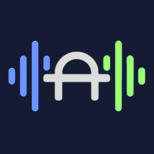
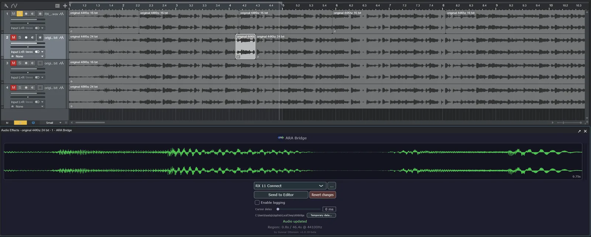
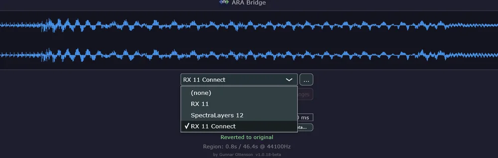
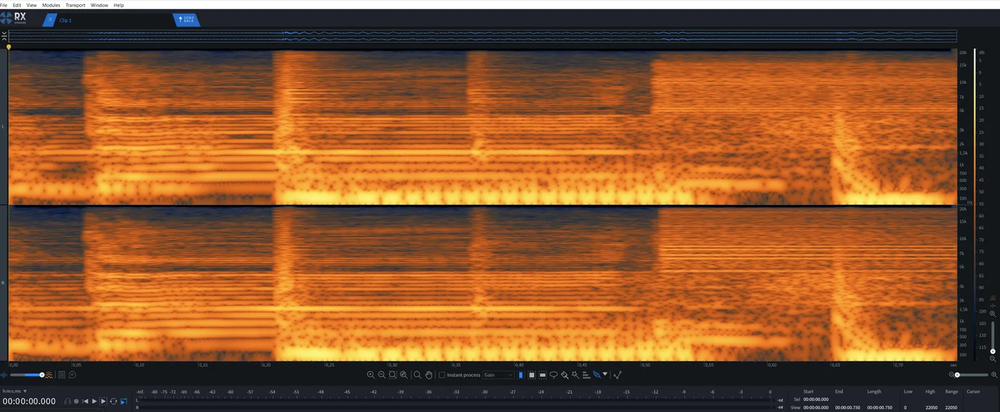
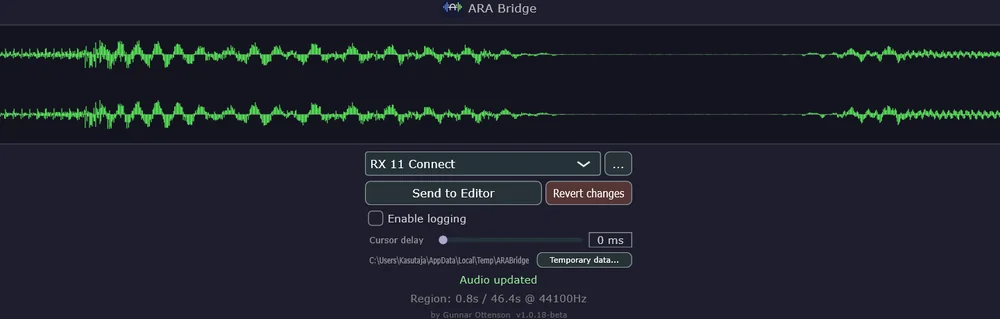

ARA BridgeARA Bridge is a free VST3/ARA plugin for Fender Studio Pro (formerly Studio One) and Cubase. Send an audio event to RX, RX Connect, SpectraLayers, WaveLab or any editor, save, and the edit plays in your project — no export, no import, no bounce.
Download for Windows Version 1.0.20-beta · Windows 11 x64 · all releases

Add ARA Bridge to an audio event, choose an editor from the list, and click Send to Editor. Installed editors are found automatically.

Repair, de-noise or edit in your editor, then save with Ctrl+S — or click Send Back in RX Connect and Apply in ARA Bridge. Save as often as you like.

The edited audio plays in your DAW right away. The waveform turns green. Not happy? Revert changes brings back the original.
Hosts RX 10, 11 and 12 Connect, so Send and Send Back work in Studio Pro.
Auto-detects RX, SpectraLayers, WaveLab, Audition, Sound Forge, Audacity and ocenaudio. Add others with Browse.
Edits play back immediately — no real-time bounce or import step.
Stereo waveform preview, playback cursor and level meters inside the plugin.
Sliced events are edited independently; revert affects only the current region.
Edits are stored with the song and restored when you reopen it. Mixed sample rates are resampled automatically.
ARABridge_x.x.x_Setup.exe. It installs to C:\Program Files\Common Files\VST3\.Windows SmartScreen may warn about the installer because it isn't code-signed. Click More info → Run anyway.
Full usage notes and troubleshooting are in the README.
Install ARA Bridge, add it to the audio event as an ARA plugin, and pick RX 10, 11 or 12 Connect from its dropdown. ARA Bridge hosts RX Connect itself, so Send and Send Back work as they should. Click Apply when the audio comes back from RX.
Pick your RX Audio Editor version in ARA Bridge and click Send to Editor. RX opens with the audio; edit it and press Ctrl+S. The edited audio plays back in the DAW straight away.
Yes. Installed editors are detected automatically. Any other editor can be added with the Browse (…) button or in %APPDATA%\ARABridge\scan.ini.
Fender Studio Pro is the new name for Studio One. ARA Bridge is tested with Studio Pro 8. Earlier Studio One versions with ARA support may work but are untested.
ARA Bridge never overwrites your source files. Edits are kept in separate files and played back in place of the original, and Revert changes goes back to the original. Committing an edit (Render in Studio Pro, Make Extension Permanent or Bounce Selection in Cubase) is done by the DAW itself.
It's free. Windows 11 x64 only.